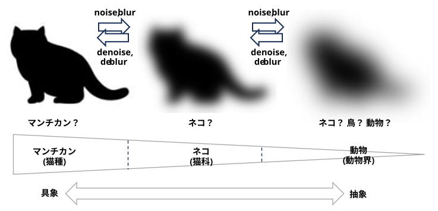

人間は知識を概念の分類体系に整理し、抽象化の階層構造と、認知的な労力を最小限に抑えて対象を認識し命名できる基本レベルを持つ。Cobweb は、この能力に関する古典的な認知理論であり、カテゴリの有用性を最大化することで確率的な概念階層を構築する漸進的な学習器である。我々は、拡散モデルは画像合成用に設計されているものの、暗黙のうちに同じ計算を実行していると主張する。
・・・
拡散モデルは、 さまざまなノイズレベルで破損したデータのスコア（対数密度の勾配）を推定することで、徐々にノイズが増加するプロセスを逆転させることを学習します。これらのモデルは通常、ブラックボックスサンプラーとして研究され、サンプル品質に基づいて評価されますが、人間の概念形成のモデルとしては評価されません。しかし、これらのモデルが学習する対象、つまり徐々に平滑化されたデータ密度のファミリーは、概念階層の構造を持ち、さまざまな抽象度レベルでのデータの表現の連続体となっています。
(AIモード解説)
Cobweb (クモの巣)
1987年にダグラス・H・フィッシャー（Douglas H. Fisher）氏の論文 “Knowledge Acquisition Via Incremental Conceptual Clustering” で提唱された COBWEB（コブウェブ）とは、機械学習における「増分型階層概念クラスタリング（Incremental Hierarchical Conceptual Clustering）」の代表的なアルゴリズム。
データを徐々に平滑化（ノイズを加えてボヤけさせること）していくプロセスは、実は「人間の概念の階層構造（ピラミッド構造）」と同じ役割を果たしているという指摘
ノイズが少ない（具体的）:
「柴犬」「チワワ」といった、ディテールがはっきりした個別の具体的な表現。
ノイズが中程度（やや抽象的）:
細かい毛並みや顔のパーツは潰れ、輪郭や色合いだけが残るため、個別の犬種ではなく「犬」や「四足歩行の動物」という少し広い概念になる。
ノイズが多い（高度に抽象的）:
もはや何のアウトラインかも分からず、大まかな色の塊や構図だけが残ります。これは「生き物」や「物質の存在」といった、極めて抽象的な概念に対応する。
・・・
拡散モデルには、基本レベル、つまり概念が最小限の認知的労力で認識される中間的なノイズレベルが存在する
(AIモード解説)
研究では、この心理学の指標を、拡散モデルの数学的指標である「相互情報量（Mutual Information）」や「PMI（自己相互情報量）」として数式化します
次に、拡散モデルの「ノイズの量（\(t\)）」を、心理学の「概念の抽象度（階層の深さ）」と対応させます。
実際に学習済みの拡散モデルにテストデータを流し込み、「ノイズレベルごとの情報獲得量」を計算してグラフにプロットします。
実際の実験でグラフを描くと、ノイズが多すぎず少なすぎない「中間的なノイズレベル（\'t^*\)）」の時点で、グラフの波が綺麗な「山型（ピーク）」を描きます。このピークこそが、情報獲得量が最大化し、認知的労力が最小になる「基本レベル（イヌのレベル）」が存在する決定的な証拠です。